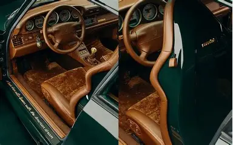
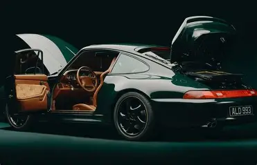
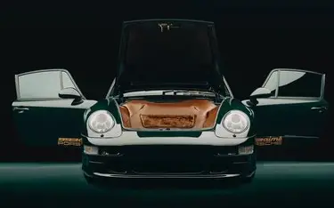

Everyone who loves cars has probably thought about their own dream restoration at some point. What you would do if you could take a car and put your own spin on it, using time-honoured processes, the best materials and quality components? Relatively few are able to carry through with that dream, but sometimes that passion – especially when it’s for a brand like Porsche – is just too strong to resist. Just ask Teddy Santis. Since 2014, Aimé Leon Dore, the New York-based fashion and lifestyle brand that Teddy founded and is the creative director of, has made waves with its range of classic apparel, informed by street culture, and delivered with contemporary flair. In 2020, Aimé Leon Dore unveiled the first of its collaborations with Porsche, which has seen the two companies restore one-off classic Porsche sportscars in inimitable style. In doing so, it highlighted a shared philosophy for the highest quality of craftsmanship, attention to detail and understated, elegant style.


